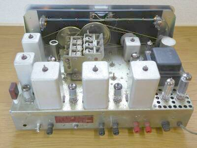
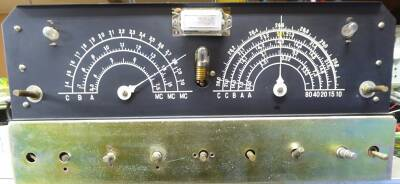
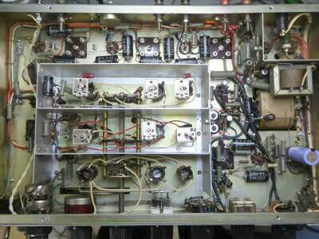
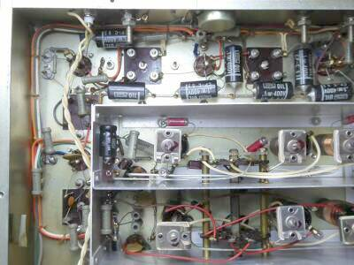
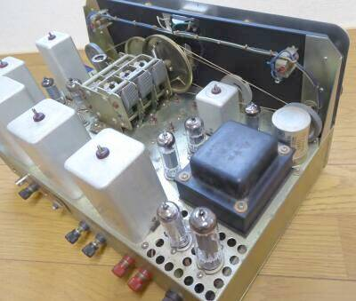
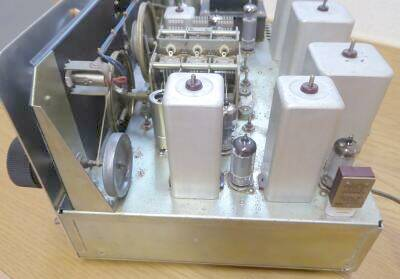

 |
シャーシ上面をリアより
１５０KHｚのIFT（３個）が大きく見えます
さすがに選択度はよく、ＡＭ放送受信には全く適しません
左に見える小さいＩＦＴが、２．１８ＭＨｚの１ｓｔＩＦトランスです
左端のＦＴ-２４３水晶片は、１ｓｔＩＦ=２．１８ＭＨｚから１５０ＫＨｚの2ｎｄＩＦに変換するためのもの
アンテナ端子は、陸式ターミナル（２端子）からＢＮＣ-Ｒに交換しました |
 |
フロントパネルを外したフロントシャーシの様子
糸掛けダイヤルの緩みについても、この時点で修正します
メータのカバーが外れて、針が引っかかるような状態にあったので、両面テープを使って補修しました |
 |
シャーシ下面
追加した電解コンデンサが写っています
容量抜けが気になったもので、１個だけ追加しました
中圧１０５Ｖは、定電圧放電管で安定化させてあり、その効果は十分発揮されています
こちらは完成品で、非常にきれいに配置、半田付け＆配線されています
ＡＦ-ＶＲは後で交換されたものらしく、φ３０と大型でＢカーブのもの、いきなり大きな音がしますので、ここはＡカーブのものに交換です |
 |
左写真は、上写真の左上部をアップで、きれいに配置、半田付け＆配線されている様子がよくわかります
ＲＦオシレータ部には、スチロール・コンデンサが使用されています
また、当時普及していたコイルパックの採用ではなく、ひとつづつの単独のコイルが使用されています |
 |
リアから見た本体右半分です
手前は電源部で、整流管と定電圧放電管が見えます
発熱を意識して、管の周囲は通気の穴があけてあります
電源トランスの奥にあるＩＦＴ状のものは、１５０ＫＨｚＢＦＯ発振コイルです
周波数可変（ＢＦＯピッチ）のＶＣには、ポリバリコンが採用されています
その右に見える球が、プロダクト検波に使用されている６ＢＥ６です |
 |
ｗｅｂにある写真で確認すると、少なくともＮＴ-１１０においては、１ｓｔＩＦのアンプはなさそうです
すなわち高１中２の構成だと思われます
同じ管球数ですが、６ＢＡ６ １本の使い方が異なるようで
ＮＴ-１１０では、１ＭＨｚマーカー
ＮＴ-１１０Ｂでは、１ｓｔＩＦ-Amp
に使用されていると思われます（記事最後に訂正？）
写真は、本機の１ｓｔＩＦ部です
見えている水晶は、２．３３MHｚです
従いまして、本機にはマーカーの内臓はありません |
|
本品は完成品で、真空管１本の劣化（感度低下の原因）が気になって交換したくらいで、ほかに大きな問題はなく、各種調整後、実際に稼働をさせてみての感想です
ＡＭ全盛時代（後期）の受信機ではありますが、短波放送の受信に適していません
選択度が良くて、鼻つまみの音にしか聞こえません
日本も、これからはＳＳＢの時代という黎明期にあっての登場ですので、ＳＳＢ受信ということを大きく意識した設計が行われたと考えるのが順当かもしれません
そのＳＳＢ受信ですが、本来のＢＦＯ周波数固定で、スプレッドダイヤルを回して選局/復調することが出来ます
ＣＷ／ＳＳＢモード時は、ＡＧＣはＯＦＦが当たり前の時代で、プロダクト検波を採用したとはいえ、それなりにＩＦ／ＲＦゲインを絞ってやらないと、フルゲインのままではまともな復調はできません（特に、本機ではゲインが高い！）
が、コツがわかると（ゲイン調整が適切にできると）、スプレッドダイヤルだけを手にして選局/復調できます
ＰＯＷＥＲスイッチでスタンバイして戻ってきても、ちゃんとその時の信号を受信します
右端の二重ツマミ
パネル刻印は、ＩＦ ＧＡＩＮ
内側が２．１８ＭＨｚＩＦゲイン調整で、外側が１５０ＫＨｚＩＦゲイン調整です
この使い方（正しい使い方）が、取説もなく（回路図もない！）よくわかりませんが、フルゲインでは明らかにゲインオーバーで、２．１８ＭＨｚＩＦゲインを半分近く絞った状態を普通として使用するのが適切そうです
そのうえで、必要に応じて１５０KHｚＩＦゲイン調整をする・・・
ＩＦ３段増幅（１ｓｔＩＦ=１段、２ｎｄＩＦ=２段）で、かなりのゲインを稼いでいることには違いありません
なかなかの高感度です
２．１８ＭＨｚＩＦゲインを半分近く絞った状態での実測です
AMの受信において、１ＫＨｚ３０％変調ON/OFFにより、Ｓ/Ｎ=１０ｄｂが得られる信号強度について
| 周波数帯 |
必要な信号強度 |
| ７MHｚ |
０．６μＶ |
| １４MHｚ |
０．８μＶ |
| ２１MHｚ |
１．２μＶ |
安定度もそれなりに良くて、Ｓ/Ｎも良く、ＳＳＢの復調音にも余裕があります！？
当時として、非常によくできた受信機だと感じます（実践向き）
ＮＴ-１１０発売当時の回路図を入手することができました(2020.07 ＣＱ１９６３年８月号記事)
これによると、最初から高１中３の構成です（本機と同じ）
マーカー内蔵モデル（高１中２）は、一体？？？
消去法では、ＮＴ-１１０Ａが該当しそうです
広告を見て思い出しました・・・型式先頭のＮＴは、オーナーのＪＡ１ＮＴからきていることを・・・ |